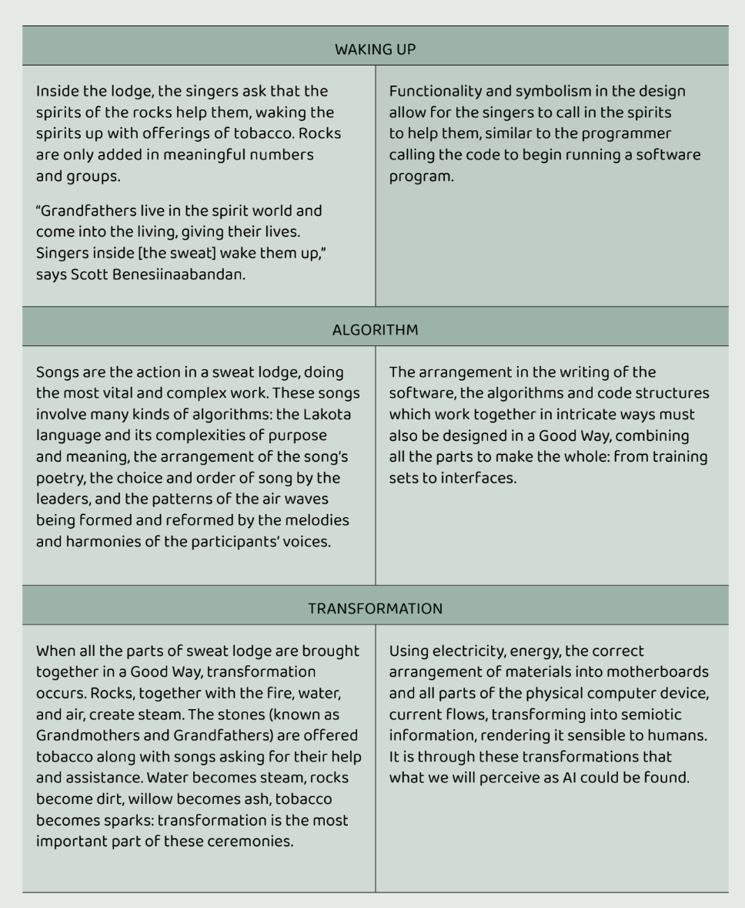

Reading Recipes
Reading Recipe 1:
5% of your grade
- Read Epilogue from Karen Hao’s Empire of AI
- Research an existing handmade dataset project to show to the class in a ~5min presentation. You may choose something from this list of examples or something you’ve found yourself. Either way, please sign up in this spreadsheet to avoid duplicate presentations. You will present this next week at the beginning of class. A handmade dataset project is any AI project that involves training a model on a dataset (that is human-scale) created by the designer/artist themselves or in community with a small group of people for non-commercial purposes.
Reading Recipe 2:
5% of your grade
Read The umbra of an imago: Writing under control of machine learning - Allison Parrish
Markov Chain experiment
Markov chains are a kind of simplistic statistical method by which we can generate text. There’s no ‘training’ that happens. Markov chains track which words tend to follow which throughout the text, then use those odds to generate new text. You’ll use them to quickly experiment with generating text from different source texts.
- Create a corpus of text to (I recommend at least 1000 words). The text can be anything (past papers you’ve written, social media posts, texts from your mom, lyrics, etc), but you will need to explain where the text came from and why you chose it.
- Paste or upload your text to this web tool https://handmadedatasets.com/markov_example/ and experiment with the source material and the n-gram parameter. N-grams control how much context the model remembers before predicting the next word. lower n makes output looser and more random, higher n keeps it closer to the original phrasing but needs more source text to work well.
- Submit screenshots of your markov experiments along with a sentence about your source text.
Reading Recipe 3:
5% of your grade
- Read Sowing the Latent Field - Moisés Horta Valenzuela
- Listen to one of the following tracks that incorporates RAVE models
- Submit a few sentences on -> What you noticed auditorally? What references did you pick up if any? What did the generative technique add to the emotional or aesthetic quality of the music that may not have been possible with another technique (i.e. sampling, live playing, etc)? Did you find this conceptually interesting? Why or why not?
Reading Recipe 4:
5% of your grade
Read How to Build Anything Ethically - Suzanne Kite
Activity (2 options):
-
Option 1 - Create a “reflection visual/diagram” of your Handmade Dataset thus far in light of the ethical considerations brought up in How to Build Anything Ethically. Your visual/diagram can be as expressive as you like but it should communicate the ethical choices, questions, and discomforts you have with your project/dataset thus far.
Here’s one I made reflecting on the previous iteration of this course (which was taught in a shorter more survey-like format):

-
Option 2 - Create a “protocols” table outlining your values and how they influenced different decisions you made about your project.
Example from How to Build Anything Ethically: